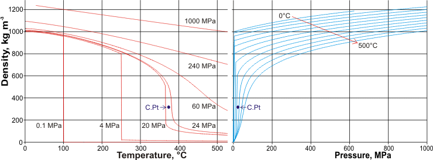

2-D Pressure-Temperature-Density data derived from [540]
The density anomalies of water are described elsewhere. The liquid-vapor density data in the graphs opposite and below were obtained from the IAPWS-95 equations [540]. Such data for liquid water has been reviewed [2329 ] and extended [2342 ]. The density at higher temperatures and pressures has been investigated using laser-driven shock compression [2318]. It should be noted that earlier work used water with unknown isotopic constitutions and different (now defunct) temperature scales.
Other phase diagrams for water are presented elsewhere [681]. The density of supercooled (emulsified) water under pressure has been determined [1685 ].
The density of liquid water increases with increasing pressure and decreases with increasing temperature. THz spectroscopy has investigated the pressure response of the THz spectrum of bulk liquid water [3655]. Hydrogen-bonded double-donor water pairs were found to contribute most to the THz response around 180 cm−1, whereas the interstitial waters had negligible effect. The two graphs below show the variation in liquid, gaseous and supercritical water density with temperature and pressure. .
The variation in the density of liquid, gaseous, and supercritical water with temperature and pressure
The density of liquid and solid water along the phase line
Illustrated opposite is the density of liquid and solid (that is, the ices) water along the liquid-solid phase line. Note that temperature varies along this phase line (as shown dashed red). Hexagonal ice is less dense than liquid water, whereas the other ices found in equilibrium with water are all dense,r with phase changes occurring on the approach of the liquid and solid densities.
The volume of ambient water as the pressure changes
The molar volume of water is shown left at 300K (approximately ambient temperature) as the pressure changes. At positive pressures, two-phase changes occur, with liquid water first changing to ice VI at about 0.99 GPa and then changing to ice VII at about 2.13 GPa (at equilibrium). The liquid curve is from IAPWS-95, whereas the ice pressure-volume data is from [2337 ]. At negative pressures (metastably stretching the liquid water without vapor formation, if physically possible), the liquid will change to ice XVI at about -0.2 GPa.
As pressure increases, the ice phases become denser. They achieve this by initially bending bonds, forming tighter molecular rings or helical networks, and finally including greater network interpenetration. This is particularly evident when comparing ice-five with the metastable ices (ice-four and ice-twelve) that may exist in its phase space.
The Pressure-Temperature-Volume of water
The Pressure-Temperature-Density of water
The density and isobaric expansivity of heavy water (D2O) from 254 to 298 K and up to 100 MPa has been investigated and shown to support a liquid-liquid coexistence boundary as found for light water (H2O) [3777].
[Back to Top  ]
]
Home | Site Index | Water phase diagram | Ices, introduction | Ice-Ih | Ice-Ic | Ice-Isd | II | III | IV | V | VI | VII | VIII | IX | X | XI | XII | XIII | XIV | XV | XVI| XVII | XVIII | Amorphous ice | LSBU | Top
This page was established in 2015 and last updated by Martin Chaplin on 31 October, 2021